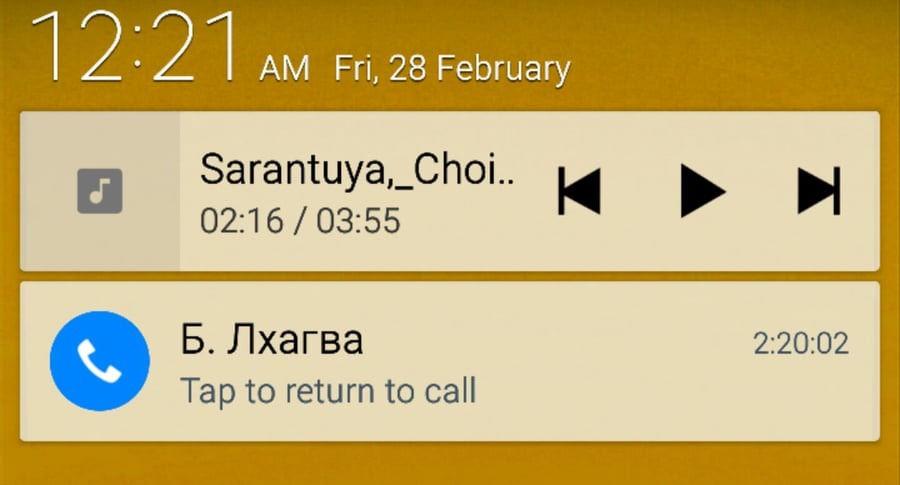
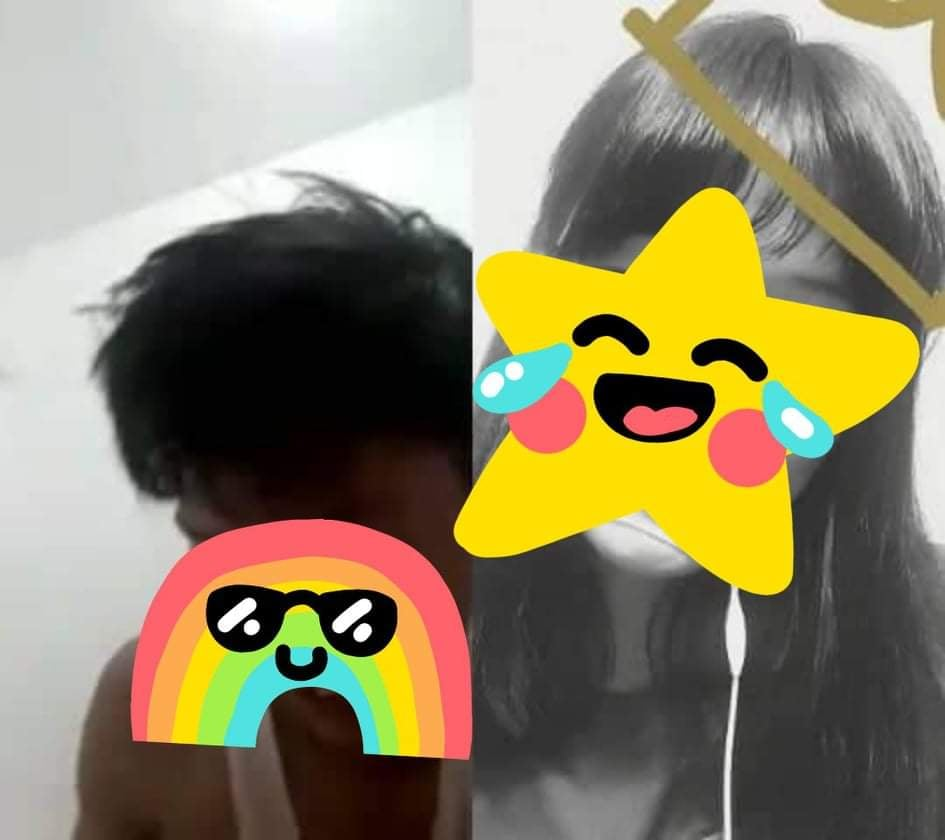
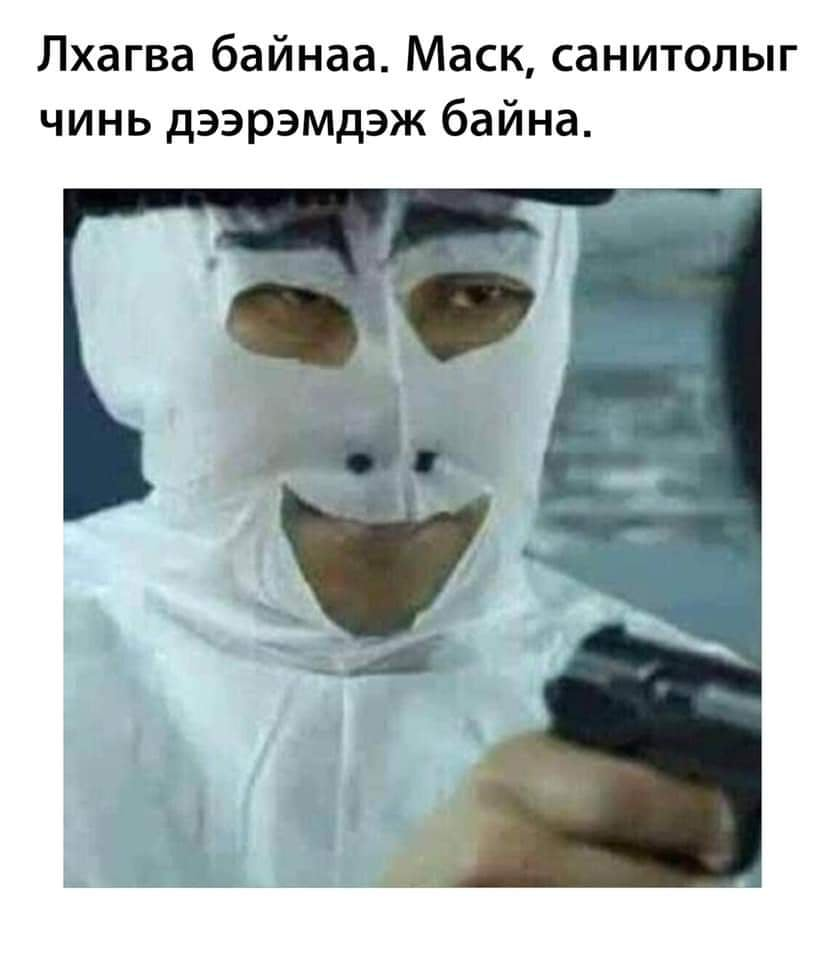
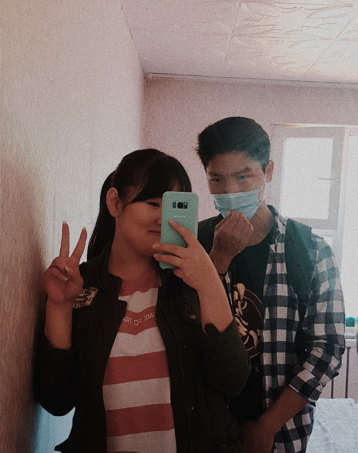
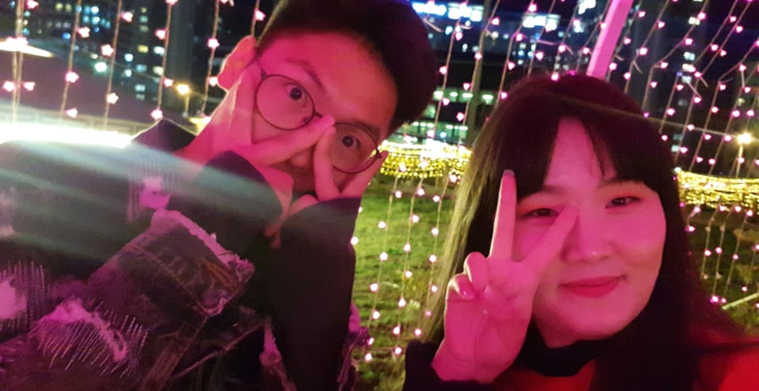

It's totally my fault. I shouldn't have to do it.
2016 онд л байх. Төгсөх ангийн хүүхдүүд байж билээ. Чамайг миний усны савыг хагална гэж ерөөсөө бодоогүй ээ. Гэхдээ тэр ч яахав. Угаасаа болох ёстой юм л болж байсан юм байлгүй. Хэрвээ тэр явдал тохиолдоогүй бол би чамтай ийм дотно болохгүй байх байсан гэж боддог. Тэгэхээр бүх зүйл утга учиртай болдог гэж би боддог. Чамтай учирсандаа хэзээ ч харамсаж байгаагүй болохоор тийм зүйл болсонд маш их баяртай байна.
Тэгээд л оюутан болцгоосон байх. Хичээл номтой завгүй, гэхдээ 10 жилийнхээ амьдралыг санадаг байлаа. 48-с авч үлдсэн эрхэм найз минь гэж бодсоор өвлийн амралтаар уулзаж билээ. Тэгээд тэр нэг мөсөн гулгуур дээр нь гулгах гээд чадаагүй. Тэрнээс хойш гулгана гэж ярьсаар өдийг хүрчээ. Өвлийн улиралд уулзах мөч цөөхөн тохиосонд харамсаад барахгүй нь!
Тэгээд түүнээс хойш 2019 оноос хойш өдөр шөнөгүй утсаар ярьдаг болоод хөл хорионд орчхож билээ. Тэр үеэс хойш чиний уурыг хэчнээн хүргэж итгэлийг чинь хэчнээн алдсан юм бэ би. Тэр үед өөр юу ч бодолгүй үнэхээр сайхан байжээ. Одоо хэн хэн нь хэчнээн асуудалтай, бодох зүйл ихтэй болжээ.
 2020 он. Энэ үед л бүх зүйл эхэлсэн. Хамтдаа тоглож, цагийг өнгөрүүлж, тэнэг шалтаг гаргаж уулзаж, чиний зургийг нууцаар авч эхэлж. Тэгээд л чи зураг нууцаар авлаа гээд уурлана. Уулзаагүй үедээ харж сэтгэлээ дэвтээх зүйл хэрэгтэй байдаг байсан болохоор л тэр шүү дээ. Video call хийж, хөл хорионд ч гэсэн хамтдаа солиорч байж. "Лхагва байна аа онгоцыг чинь дээрэмдэж байна" гэдэг MEME-ээр чамайг их шоглодог байсан чи санаж байна уу?
 2020 оны зун. Миний одоогийн туулсан 22 жилийн зунаас хамгийн сайхан байсан зун байх. Чиний хийж өгч байсан хоолнууд ГОЁ! Тэгээд л тэр зун хамгийн гоё байсан.
2021 оны 9 сарын 25. Тэр зунаас хойш анх уулзаж, эвлэрсэн өдөр. THE BEST DAY EVER! Тэрнээс хойш юу болсныг бол чи санаж байгаа байх. Тэгээд л өнөөдөр...
Энэ бүх цаг хугацаанд чиний хэлсэн зүйлүүд бүгд л үнэн байсан. Би хогийн зөрүүд, дураараа болохоор зөрсөөр байгаад л чамайг гомдоодог байжээ.